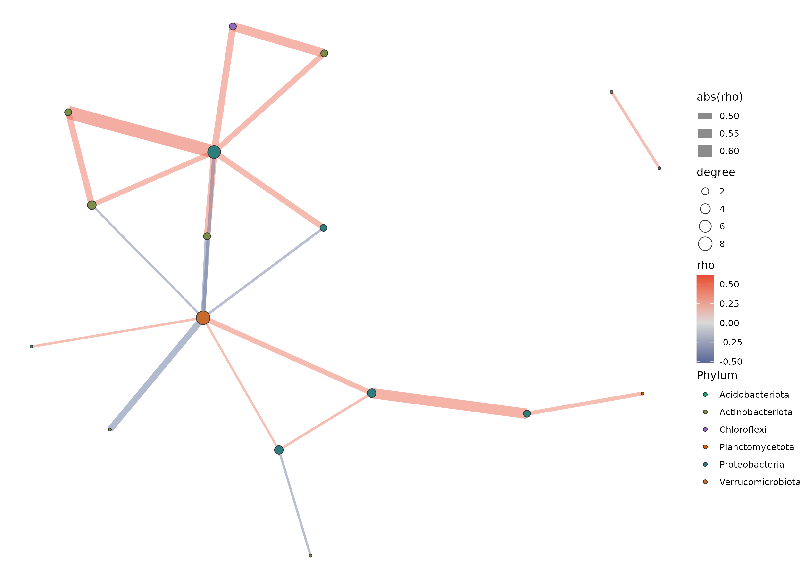
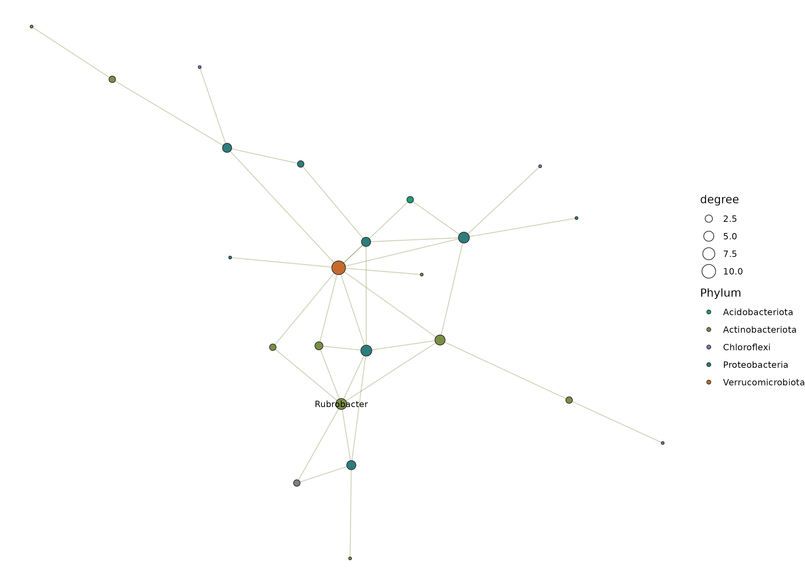

16S 微生物组最佳实践系列（九）：共现网络分析——谁和谁总在一起
📋 教程信息 - GitHub：petemeng/16S-Tutorial（完整代码与环境文件） - 数据来源：Atacama soils 双端数据集（54 个样本，37 个过滤后属用于网络分析） - 预计阅读：40 分钟 | 实操：25 分钟 - 难度：⭐⭐⭐⭐（5 星制） - 前置知识：完成本系列第 6 篇，
results/下有phyloseq_object.rds
本篇目标
前面几篇我们一直在看“某个 genus 在哪里多、哪里少”。但群落不是一个个 genus 独立存在的清单，很多类群会一起波动，也有些类群会呈现互相排斥的模式。
这一篇换个问题：Atacama 荒漠土壤里，哪些 genus 倾向于协同出现，哪些是网络中的 hub？
读完这一篇，你会：
- 理解为什么微生物组网络不能直接拿原始相对丰度做 Pearson 相关
- 用 CLR + Spearman 先得到边际相关网络
- 用 graphical lasso 进一步提取更稀疏的条件依赖网络
- 找出 degree 和 betweenness 最高的 hub genus
- 知道网络结果更适合提出生态假说，而不是直接宣称“互作已被证明”
为什么这里不用“直接相关”
微生物组网络最大的坑，仍然是前面反复提到的组成性问题。
如果你直接对相对丰度矩阵做 Pearson 相关，一个 genus 比例上升，别的 genus 比例就会被动下降，于是很容易制造出一堆并不存在的负相关。
这套 Atacama 教程里，我们用两步走来尽量减轻这个问题：
第一步，用 CLR 变换后再做 Spearman。
它保留了“谁和谁一起变”的直观性，适合先看边际相关网络。
第二步，用 huge 包的 graphical lasso。
它不是简单地看两两相关，而是在控制其他 genus 之后，保留更可能属于“直接条件依赖”的边。
所以这篇里你会看到两张网络图：
- Spearman 网络：边更少，方便先看显著共变关系
- graphical lasso 网络：边更多但更稀疏，适合看条件依赖结构
准备工作
和前面的差异分析一样，我们先把 ASV 合并到 genus 水平，再做一层 prevalence 和平均丰度过滤，避免极低丰度噪声把网络搞得很碎。
# ============================================================
# 文件：analysis/09_network_analysis.R
# 功能：Atacama genus 水平共现网络分析
# 方法：CLR + Spearman；graphical lasso
# ============================================================
source("/media/desk16/tly9658/16s-atacama-tutorial/analysis/common_16s.R")
suppressPackageStartupMessages({
library(ggraph)
library(ggplot2)
library(huge)
library(igraph)
library(tidygraph)
})
ensure_dir(file.path(ATACAMA_ROOT, "results", "figures"))
ps <- readRDS(file.path(ATACAMA_ROOT, "results", "phyloseq_object.rds"))
ps <- prune_taxa(taxa_sums(ps) > 0, ps)
ps_genus <- tax_glom(ps, taxrank = "Genus", NArm = FALSE)
otu <- as(otu_table(ps_genus), "matrix")
if (taxa_are_rows(ps_genus)) {
otu <- t(otu)
}
tax_df <- tax_table(ps_genus) %>%
data.frame(check.names = FALSE) %>%
rownames_to_column("FeatureID") %>%
mutate(
Family = ifelse(is.na(Family) | Family == "", "Family_unclassified", Family),
Genus = ifelse(is.na(Genus) | Genus == "", paste0("Unclassified_", Family), Genus),
Phylum = ifelse(is.na(Phylum) | Phylum == "", "Unclassified", Phylum)
)
genus_names <- make.unique(tax_df$Genus)
colnames(otu) <- genus_names
prevalence <- colSums(otu > 0) / nrow(otu)
mean_abundance <- colMeans(otu / rowSums(otu))
keep <- prevalence >= 0.2 & mean_abundance >= 5e-4
otu_filt <- otu[, keep, drop = FALSE]
cat("网络分析输入：\n")
cat(" 样本数:", nrow(otu_filt), "\n")
cat(" 属数:", ncol(otu_filt), "\n")
📊 输出：
网络分析输入：
样本数: 54
属数: 37
54 个样本对网络分析是能做的，但也不算非常奢侈。所以这里一开始就把 genus 数压到 37 个，重点是先拿到稳一点的结构，而不是追求“边越多越好看”。
Step 1：CLR + Spearman 网络
这一步先回答最直观的问题：哪些 genus 在 Across samples 的变化趋势最一致？
# ============================================================
# Step 1: CLR + Spearman
# ============================================================
clr_mat <- log(otu_filt + 0.5)
clr_mat <- clr_mat - rowMeans(clr_mat)
cor_mat <- cor(clr_mat, method = "spearman")
p_mat <- matrix(
1,
ncol = ncol(clr_mat),
nrow = ncol(clr_mat),
dimnames = list(colnames(clr_mat), colnames(clr_mat))
)
for (i in seq_len(ncol(clr_mat) - 1)) {
for (j in (i + 1):ncol(clr_mat)) {
test_res <- suppressWarnings(cor.test(
clr_mat[, i], clr_mat[, j], method = "spearman"
))
p_mat[i, j] <- test_res$p.value
p_mat[j, i] <- test_res$p.value
}
}
q_mat <- matrix(
p.adjust(as.vector(p_mat), method = "BH"),
nrow = nrow(p_mat),
byrow = FALSE
)
rownames(q_mat) <- rownames(p_mat)
colnames(q_mat) <- colnames(p_mat)
edge_idx <- which(abs(cor_mat) >= 0.45 & q_mat < 0.05, arr.ind = TRUE)
edge_idx <- edge_idx[edge_idx[, 1] < edge_idx[, 2], , drop = FALSE]
spearman_edges <- tibble(
from = colnames(cor_mat)[edge_idx[, 1]],
to = colnames(cor_mat)[edge_idx[, 2]],
rho = cor_mat[edge_idx],
q_value = q_mat[edge_idx]
)
write_tsv(spearman_edges, file.path(ATACAMA_ROOT, "results", "network_spearman_edges.tsv"))
cat("Spearman 显著边数:", nrow(spearman_edges), "\n")
📊 输出：
Spearman 显著边数: 21
21 条显著边，说明这批荒漠土壤样本里不是“所有 genus 都彼此弱相关”，而是能筛出一小批结构化共变关系。
从 results/network_spearman_edges.tsv 里直接看前几条边，也能感受到这个网络不是纯正相关：
📊 输出：
from to rho q_value
Candidatus_Udaeobacter Unclassified_Steroidobacteraceae 0.4531 0.0224
Candidatus_Udaeobacter SZB85 -0.4578 0.0224
Candidatus_Udaeobacter Unclassified_Family_unclassified.5 -0.4719 0.0180
SZB85 Unclassified_Family_unclassified.5 0.5059 0.0101
Candidatus_Udaeobacter RB41 0.4568 0.0224
这里既有正相关，也有负相关。最醒目的节点已经开始出现：Candidatus_Udaeobacter。
Step 2：计算 hub genus
有了边之后，下一步通常不是直接解释每一条关系，而是先问：谁在网络里最“忙”？
# ============================================================
# Step 2: 计算节点拓扑指标
# ============================================================
tax_lookup <- tax_df %>%
transmute(Genus = genus_names, Phylum)
g_spearman <- graph_from_data_frame(
spearman_edges,
directed = FALSE,
vertices = tax_lookup %>%
filter(Genus %in% unique(c(spearman_edges$from, spearman_edges$to)))
)
V(g_spearman)$degree <- degree(g_spearman)
node_metrics <- tibble(
Genus = V(g_spearman)$name,
degree = V(g_spearman)$degree,
betweenness = betweenness(g_spearman),
closeness = closeness(g_spearman)
) %>%
left_join(tax_lookup, by = "Genus") %>%
arrange(desc(degree), desc(betweenness))
write_tsv(node_metrics, file.path(ATACAMA_ROOT, "results", "network_node_metrics.tsv"))
cat("Top 10 hub genera（Spearman 网络）：\n")
print(head(node_metrics, 10))
📊 输出：
Top 10 hub genera（Spearman 网络）：
# A tibble: 10 × 5
Genus degree betweenness closeness Phylum
1 Candidatus_Udaeobacter 8 61.5 0.0476 Verrucomicrobiota
2 Unclassified_Family_unclassified.5 7 31.5 0.0400 Proteobacteria
3 Unclassified_Xanthobacteraceae 3 24.0 0.0357 Proteobacteria
4 Unclassified_Steroidobacteraceae 3 13.0 0.0345 Proteobacteria
5 0319-7L14 3 4.0 0.0345 Actinobacteriota
6 Reyranella 2 13.0 0.0256 Proteobacteria
7 SZB85 2 0.0 0.0333 Proteobacteria
8 Unclassified_Family_unclassified.16 2 0.0 0.0270 Chloroflexi
9 uncultured.20 2 0.0 0.0270 Actinobacteriota
10 Nitriliruptoraceae 2 0.0 0.0333 Actinobacteriota
这一步最值得记住的不是第 8 名还是第 9 名，而是前面那几个重复出现的 hub：
Candidatus_Udaeobacter是 degree 和 betweenness 都最高的核心节点- Proteobacteria 相关的几个未注释 family/genus 在网络中心也很活跃
0319-7L14不只在差异分析和随机森林里出现，在网络里也有一定连接度
这就是为什么网络分析很适合和第 7、10 篇联动看。一个 genus 如果同时是差异属、分类特征、hub，证据链会明显更完整。
Step 3：画 Spearman 网络图
set.seed(42)
p_spearman <- ggraph(g_spearman, layout = "fr") +
geom_edge_link(aes(color = rho, width = abs(rho)), alpha = 0.45) +
geom_node_point(aes(fill = Phylum, size = degree), shape = 21, color = "grey20") +
geom_node_text(
aes(label = ifelse(degree >= quantile(degree, 0.9), name, "")),
check_overlap = TRUE,
size = 3
) +
scale_edge_color_gradient2(low = "#3C5488", mid = "grey85", high = "#E64B35") +
scale_fill_manual(
values = setNames(
rep(songlab_discrete, length.out = n_distinct(node_metrics$Phylum)),
unique(node_metrics$Phylum)
)
) +
theme_void() +
theme(legend.position = "right")
ggsave(
file.path(ATACAMA_ROOT, "results", "figures", "ch09_spearman_network.png"),
p_spearman, width = 11, height = 8, dpi = 300
)

图 1：CLR + Spearman 共现网络。 红色边表示正相关，蓝色边表示负相关；节点越大，degree 越高。
从图上也能直观看到：Candidatus_Udaeobacter 处在网络最核心区域，周围连着一串 Proteobacteria 和 Actinobacteriota 相关节点。
Step 4：graphical lasso 条件依赖网络
Spearman 网络更像“谁和谁一起变”。但生态上更想知道的常常是：在控制其他 genus 以后，这条边还在不在？
这就是 graphical lasso 的用途。
# ============================================================
# Step 4: graphical lasso
# ============================================================
huge_fit <- huge(
clr_mat,
method = "glasso",
nlambda = 20,
lambda.min.ratio = 0.1,
verbose = FALSE
)
target_idx <- which.min(abs(huge_fit$df - 40))
adj <- as.matrix(huge_fit$path[[target_idx]])
diag(adj) <- 0
glasso_idx <- which(adj != 0, arr.ind = TRUE)
glasso_idx <- glasso_idx[glasso_idx[, 1] < glasso_idx[, 2], , drop = FALSE]
glasso_edges <- tibble(
from = colnames(clr_mat)[glasso_idx[, 1]],
to = colnames(clr_mat)[glasso_idx[, 2]]
) %>%
left_join(
spearman_edges %>% select(from, to, rho),
by = c("from", "to")
)
write_tsv(glasso_edges, file.path(ATACAMA_ROOT, "results", "network_glasso_edges.tsv"))
cat("Graphical lasso 选择的路径索引:", target_idx, "\n")
cat("Graphical lasso 边数:", nrow(glasso_edges), "\n")
📊 输出：
Graphical lasso 选择的路径索引: 4
Graphical lasso 边数: 34
这里得到 34 条边，比 Spearman 的 21 条更多，但别把“边数更多”理解成“更宽松”。这两张网的含义不同：
- Spearman 需要单边显著，强调的是边际相关
- graphical lasso 强调的是整体稀疏结构，允许一些不在 Spearman 显著表里的边保留下来
g_glasso <- graph_from_data_frame(
glasso_edges,
directed = FALSE,
vertices = tax_lookup %>%
filter(Genus %in% unique(c(glasso_edges$from, glasso_edges$to)))
)
V(g_glasso)$degree <- degree(g_glasso)
set.seed(42)
p_glasso <- ggraph(g_glasso, layout = "fr") +
geom_edge_link(color = "#7A8F45", alpha = 0.35, width = 0.45) +
geom_node_point(aes(fill = Phylum, size = degree), shape = 21, color = "grey20") +
geom_node_text(
aes(label = ifelse(degree >= quantile(degree, 0.9), name, "")),
check_overlap = TRUE,
size = 3
) +
scale_fill_manual(
values = setNames(
rep(songlab_discrete, length.out = n_distinct(node_metrics$Phylum)),
unique(node_metrics$Phylum)
)
) +
theme_void() +
theme(legend.position = "right")
ggsave(
file.path(ATACAMA_ROOT, "results", "figures", "ch09_glasso_network.png"),
p_glasso, width = 11, height = 8, dpi = 300
)

图 2：graphical lasso 条件依赖网络。 这张图更适合看网络骨架，而不是逐条边解释生态意义。
把两张图放在一起看，最稳的解读通常是：
如果某个 genus 同时出现在 Spearman 核心区域和 glasso 骨架里，它更值得后续重点讨论。
这一章结果该怎么写
如果你要把这一章写进论文或报告，比较稳妥的表述是：
“在 genus 水平经 prevalence/丰度过滤后，共保留 37 个特征用于网络分析。CLR 转换后的 Spearman 网络识别出 21 条显著关联边，其中 Candidatus_Udaeobacter、Unclassified_Family_unclassified.5 和 Unclassified_Xanthobacteraceae 具有最高的中心性。进一步使用 graphical lasso 构建条件依赖网络，共得到 34 条边，提示上述类群位于 Atacama 土壤共变结构的核心位置。”
这样写的好处是：
- 不会把“共现”说成“互作已证实”
- 同时交代了过滤策略和方法学前提
- 给后面随机森林和整合分析留下接口
本篇小结
这一篇我们把 Atacama 的 genus 水平数据做成了两张网络：
Spearman 网络 给出 21 条显著边，适合先看“谁和谁经常一起变”。
graphical lasso 网络 给出 34 条条件依赖边，适合看更稀疏的网络骨架。
最醒目的 hub 是 Candidatus_Udaeobacter，后面如果它还能在别的分析里出现，就会成为值得重点追踪的候选生态核心类群。
下一篇预告
网络分析解决的是“谁和谁有关系”。但如果你真正想做 biomarker，审稿人更关心的是另一件事：哪些 genus 最能区分 Baquedano 和 Yungay？
下一篇我们进入随机森林，用交叉验证、特征重要性和 SHAP 值，看看哪些 genus 最能代表这两条 transect。
📌 本篇图和表都来自服务器实际运行结果，可在 GitHub 仓库直接复现。
本系列导航
| 篇目 | 主题 | 状态 |
|---|---|---|
| 第 1 篇 | 只测一个基因，怎么就能知道有哪些细菌 | ✅ 已发布 |
| 第 2 篇 | 搭建环境，拿到数据 | ✅ 已发布 |
| 第 3 篇 | DADA2 去噪——从噪声中找到真实序列 | ✅ 已发布 |
| 第 4 篇 | 物种注释——给每个 ASV 一个名字 | ✅ 已发布 |
| 第 5 篇 | 多样性分析——有多“丰富”，彼此有多“不同” | ✅ 已发布 |
| 第 6 篇 | 物种组成可视化——谁占了多少 | ✅ 已发布 |
| 第 7 篇 | 差异物种分析——谁真的变了 | ✅ 已发布 |
| 第 8 篇 | PICRUSt2 功能预测——它们能做什么 | ✅ 已发布 |
| 第 9 篇 | 共现网络分析——谁和谁总在一起 | 📍 本篇 |
| 第 10 篇 | 随机森林 biomarker 筛选 | ✅ 已发布 |
| 第 11 篇 | SourceTracker 溯源分析 | ✅ 已发布 |
| 第 12 篇 | 微生物组-代谢组联合分析 | ✅ 已发布 |
| 第 13 篇 | 发表级图表与结果整合 | ✅ 已发布 |